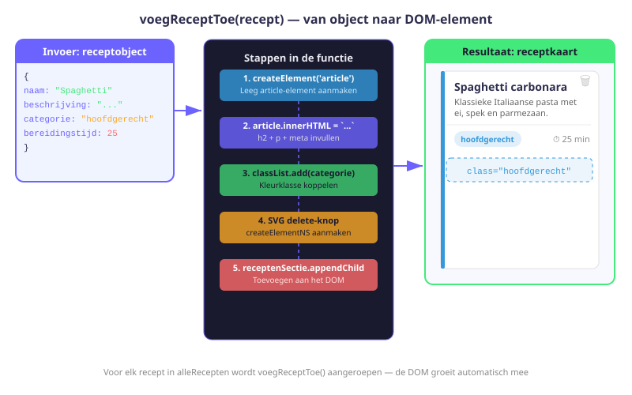
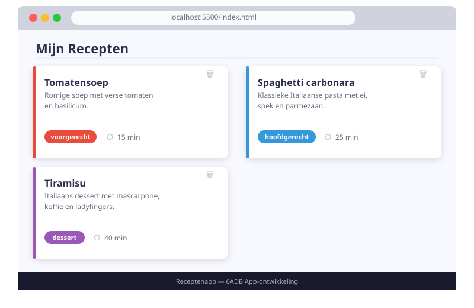

Receptenapp — Recepten Weergeven
- Data laden vanuit localStorage met
JSON.parse - Dynamisch HTML-elementen aanmaken met
createElementeninnerHTML - Een CSS-klasse koppelen aan een objecteigenschap voor kleurcodering
- Een SVG-element aanmaken met
createElementNS - Een leegtoestand tonen als er geen resultaten zijn
- De DOM manipuleren bij het laden van de pagina
10.1 script.js starten — data laden vanuit localStorage
Open het bestand script.js en begin met de volgende code. We importeren de hulpfunctie, selecteren de benodigde DOM-elementen en laden de recepten uit localStorage.
// script.js
// [ADB09] Logica voor de overzichtspagina — verdieping
import { updateLS } from "./hulpfuncties.js";
// Selecteer de DOM-elementen die we nodig hebben
const receptenSectie = document.querySelector('#recepten-sectie');
const geenReceptenBericht = document.querySelector('#geenrecepten');
const appTitel = document.querySelector('#app-titel');
const statsList = document.querySelector('#stats-lijst');
// Laad de recepten vanuit localStorage
// Als er nog niets is, beginnen we met een lege array
let alleRecepten = JSON.parse(localStorage.getItem('opgeslagenRecepten')) || [];
// Pas de h1 aan via DOM (oefening DOM-manipulatie)
appTitel.textContent = `Mijn Recepten (${alleRecepten.length})`;| Lijn | Uitleg |
|---|---|
import { updateLS } | Importeer de hulpfunctie uit het andere module-bestand |
document.querySelector(...) | Selecteer DOM-elementen via CSS-selector |
localStorage.getItem(...) | Lees de opgeslagen JSON-string |
JSON.parse(...) | Zet de JSON-string om naar een JavaScript-array |
|| [] | Als er niets is (null), gebruik dan een lege array |
appTitel.textContent = ... | Pas de tekst van de h1 aan via DOM |
|| []localStorage.getItem() geeft null terug als de sleutel niet bestaat. JSON.parse(null) geeft ook null — wat een fout zou veroorzaken als we er iets mee proberen te doen. De || [] vangt dit op en zorgt dat we altijd met een array werken.
10.2 De voegReceptToe(recept) functie — DOM-element aanmaken
Dit is de belangrijkste functie van script.js. Ze maakt voor één recept een volledig HTML-element aan en voegt het toe aan de pagina.

function voegReceptToe(recept) {
// 1. Maak een article-element aan
const kaart = document.createElement('article');
kaart.classList.add('recept-kaart');
kaart.classList.add(recept.categorie); // bv. 'hoofdgerecht' → blauwe rand
// 2. Vul de inhoud in via innerHTML
kaart.innerHTML = `
<h2>${recept.naam}</h2>
<p>${recept.beschrijving}</p>
<div class="recept-meta">
<span>${recept.categorie} • ${recept.bereidingstijd} min</span>
</div>
`;
// 3. Maak de verwijder-knop aan via createElementNS (SVG)
const verwijderKnop = document.createElement('button');
verwijderKnop.classList.add('verwijder-knop');
verwijderKnop.title = `${recept.naam} verwijderen`;
verwijderKnop.setAttribute('aria-label', `${recept.naam} verwijderen`);
// SVG prullenbak-icoon
const svg = document.createElementNS('http://www.w3.org/2000/svg', 'svg');
svg.setAttribute('width', '18');
svg.setAttribute('height', '18');
svg.setAttribute('viewBox', '0 0 24 24');
svg.setAttribute('fill', 'none');
svg.setAttribute('stroke', 'currentColor');
svg.setAttribute('stroke-width', '2');
const pad = document.createElementNS('http://www.w3.org/2000/svg', 'path');
pad.setAttribute('d', 'M3 6h18M8 6V4h8v2M19 6l-1 14H6L5 6');
svg.appendChild(pad);
verwijderKnop.appendChild(svg);
// 4. Voeg de verwijder-knop toe aan de kaart
kaart.querySelector('.recept-meta').appendChild(verwijderKnop);
// 5. Voeg de kaart toe aan de sectie in de DOM
receptenSectie.appendChild(kaart);
}Twee manieren om HTML-elementen aan te maken
In dit project gebruiken we twee technieken naast elkaar:
Techniek 1: innerHTML — snel en leesbaar voor grotere blokken HTML. Let op: gebruik dit nooit met onbetrouwbare gebruikersinput zonder sanitatie (XSS-risico).
Techniek 2: createElement + createElementNS — meer controle, veiliger. createElementNS is verplicht voor SVG-elementen (SVG heeft een eigen XML-namespace).
Waarom recept.categorie als CSS-klasse?
kaart.classList.add(recept.categorie);De categorie ("hoofdgerecht", "dessert", ...) wordt rechtstreeks als CSS-klasse toegevoegd. Dit is een elegant patroon: de categorienaam in het object en de CSS-klassenaam zijn identiek, waardoor we geen extra vertaling nodig hebben.
10.3 Alle recepten tonen bij paginaladen
Nu we de functie hebben, kunnen we ze oproepen voor elk recept in de array. De toonRecepten() functie leegt eerst de sectie, filtert op actieve categorieën en zoekterm, en roept dan voegReceptToe() op voor elk gevonden recept.
function toonRecepten() {
// Leeg de sectie eerst (belangrijk bij herladen!)
receptenSectie.innerHTML = '';
// Filter op actieve categorieën en zoekterm
const actieveCategorieen = [...document.querySelectorAll('.filter-knoppen input:checked')]
.map(cb => cb.value);
const zoekterm = document.querySelector('#zoekbalk').value.toLowerCase().trim();
const gefilterd = alleRecepten.filter(r => {
const categorieOk = actieveCategorieen.includes(r.categorie);
const naamOk = r.naam.toLowerCase().includes(zoekterm);
return categorieOk && naamOk;
});
// Toon elk recept via de functie
gefilterd.forEach(r => voegReceptToe(r));
// Toon of verberg het "geen recepten"-bericht
geenReceptenBericht.style.display = gefilterd.length === 0 ? 'block' : 'none';
// Update de h1 met het totaal aantal
appTitel.textContent = `Mijn Recepten (${alleRecepten.length})`;
// Update statistieken
toonStatistieken();
}
// Roep de functie op bij het laden van de pagina
toonRecepten();De filterketen uitgelegd
const actieveCategorieen = [...document.querySelectorAll('.filter-knoppen input:checked')]
.map(cb => cb.value);querySelectorAll(...)→ NodeList van alle aangevinkte checkboxes[...]→ spreid de NodeList uit naar een echte array.map(cb => cb.value)→ maak een array van de waarden:["voorgerecht", "hoofdgerecht", ...]
10.4 Leegtoestand tonen
Wat als er geen recepten zijn of geen resultaten overeenkomen? We tonen een bericht:
geenReceptenBericht.style.display = gefilterd.length === 0 ? 'block' : 'none';Dit is een ternaire operator: als gefilterd.length === 0 → toon het bericht (display: block), anders → verberg het (display: none). Het element staat standaard verborgen in de HTML (style="display: none;").
10.5 Statistieken tonen
function toonStatistieken() {
const categorieen = ['voorgerecht', 'hoofdgerecht', 'dessert', 'snack'];
statsList.innerHTML = '';
categorieen.forEach(cat => {
const aantal = alleRecepten.filter(r => r.categorie === cat).length;
const li = document.createElement('li');
li.textContent = `${cat}: ${aantal}`;
statsList.appendChild(li);
});
}10.6 Luisteraars toevoegen voor zoeken en filteren
// Live zoeken bij elke toetsaanslag
document.querySelector('#zoekbalk').addEventListener('input', toonRecepten);
// Herlaad bij elke wijziging van een checkbox
document.querySelectorAll('.filter-knoppen input').forEach(cb => {
cb.addEventListener('change', toonRecepten);
});addEventListener('input', ...) op het zoekveld zorgt ervoor dat de lijst live filtert bij elke toetsaanslag — zonder dat je op Enter hoeft te drukken.
Oefeningen
Op dit moment zijn er nog geen recepten in localStorage. Voeg tijdelijk testcode toe onderaan script.js om te controleren of de weergave werkt:
// TIJDELIJKE TESTCODE — verwijder dit nadien!
if (alleRecepten.length === 0) {
alleRecepten = [
{ naam: "Testrecept 1", beschrijving: "Beschrijving.", categorie: "hoofdgerecht", bereidingstijd: 30 },
{ naam: "Testrecept 2", beschrijving: "Voorgerecht test.", categorie: "voorgerecht", bereidingstijd: 15 },
{ naam: "Testdessert", beschrijving: "Zoet dessert.", categorie: "dessert", bereidingstijd: 20 }
];
toonRecepten();
}Controleer: verschijnen de 3 kaarten? Hebben ze elk een andere kleur linkerrand? Verwijder de testcode zodra alles werkt.

Pas de voegReceptToe() functie aan zodat de bereidingstijd ook een label krijgt op basis van de duur:
| Tijd | Label |
|---|---|
| Minder dan 20 minuten | "Snel" |
| Tussen 20 en 45 minuten | "Normaal" |
| Meer dan 45 minuten | "Lang" |
Schrijf een hulpfunctie tijdsLabel(minuten) die het label teruggeeft, en gebruik die in de innerHTML van de kaart.
Leg in eigen woorden uit waarom we document.createElementNS(...) gebruiken voor de SVG-icoon en niet gewoon document.createElement(...). Wat is het verschil? Wat is een "namespace" in de context van HTML en SVG?
Huistaak
Opdracht: script.js volledig uitwerken
Bouw de volledige script.js na op basis van wat je in dit hoofdstuk geleerd hebt.
Deel 1 — Basisweergave (4 punten)
- Implementeer
voegReceptToe(recept)volledig (article, classList, innerHTML, SVG-knop). - Implementeer
toonRecepten()met filtering op checkboxes en zoekterm. - Roep
toonRecepten()op bij het laden van de pagina.
Deel 2 — Statistieken (3 punten)
- Implementeer
toonStatistieken()die per categorie het aantal toont. - Roep deze functie op na elke update van de receptenlijst.
Deel 3 — Luisteraars en leegtoestand (3 punten)
- Voeg een
input-listener toe aan het zoekveld. - Voeg
change-listeners toe aan alle checkboxes. - Toon de leegtoestand correct als er geen recepten gevonden worden.
Vragenlijst
Controleer of je de leerstof van dit hoofdstuk begrijpt.
Wat geeft localStorage.getItem('sleutel') terug als de sleutel niet bestaat?
Waarvoor dient kaart.classList.add(recept.categorie)?
Waarom gebruiken we document.createElementNS voor SVG-elementen?
Wat doet de ternaire operator gefilterd.length === 0 ? 'block' : 'none'?
Welk event gebruik je voor live zoeken bij elke toetsaanslag?
Wat doet [...document.querySelectorAll('input:checked')]?